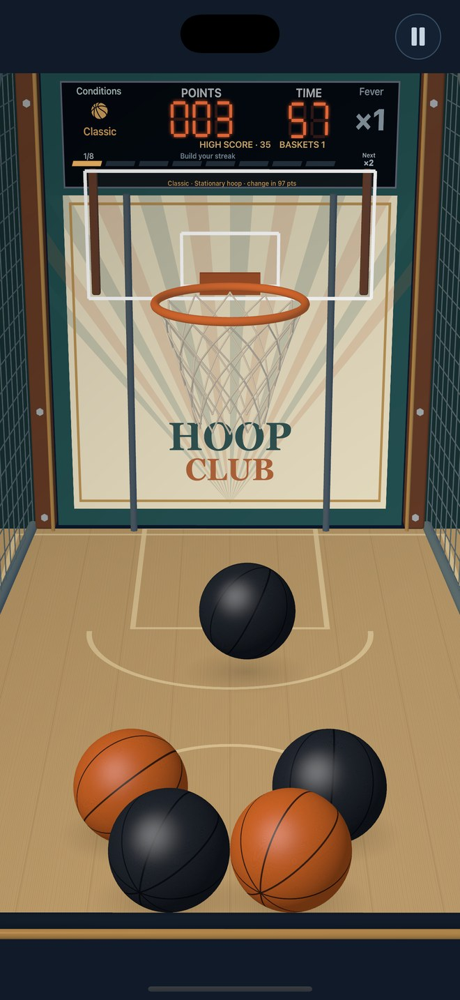
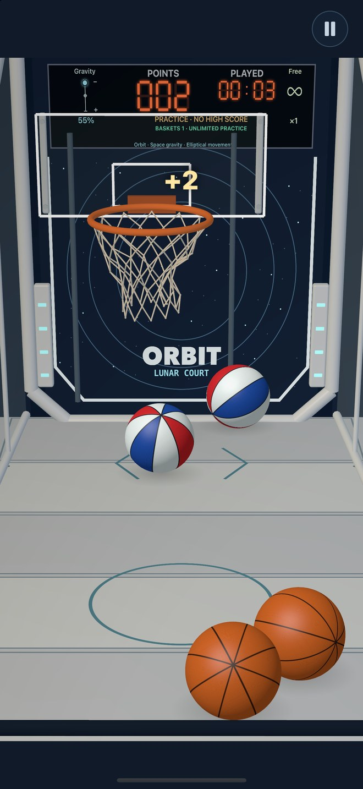
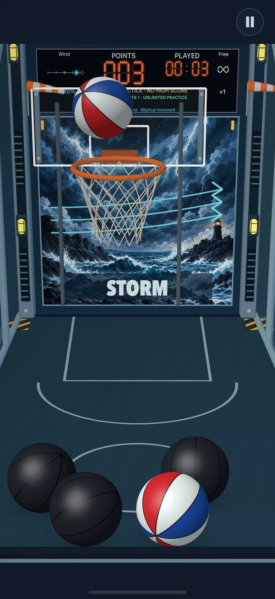
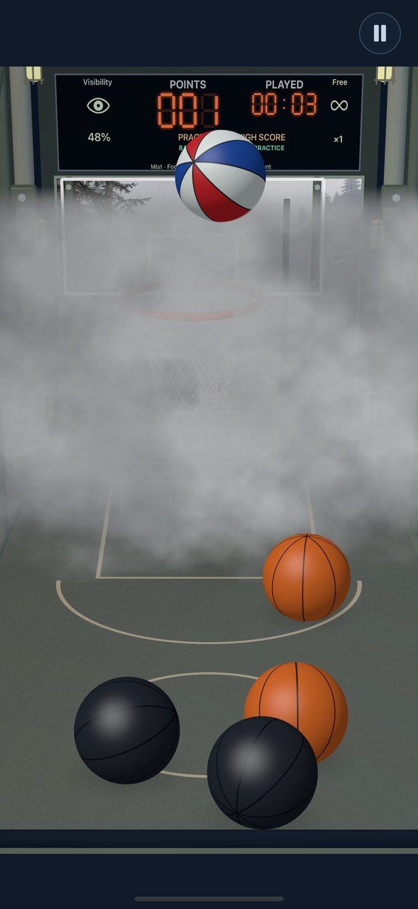
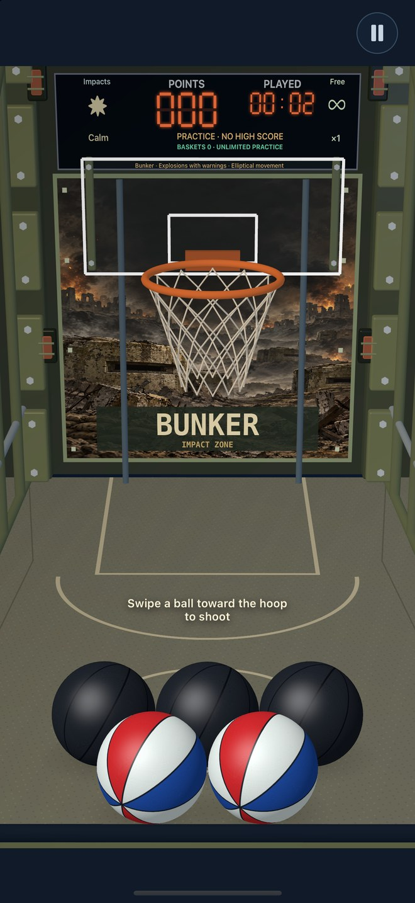

One more
shot.
A basketball arcade in your hand. Feel the bounce, find your rhythm and keep the streak alive.

Feel every shot
Real-time 3D ball physics, rim and backboard rebounds, and a responsive net.
Build the Fever
Eight baskets fill the meter. Reach ×2, then ×3 and beyond. A miss resets the streak.
Make your mark
Beat your personal best and compete on the global Play leaderboard with Game Center.
Every machine has a twist.
Start with Classic. Explore eight different courts, each with its own character, sounds and challenges.




Plus Classic, Neon, Foundry and Umbra, where a hit reveals the hidden rim.
Swipe. Score.
Stay in the game.
Play starts with 60 seconds. Every 25 points gives you five more. Every 100 points brings a random change: a new machine, moving hoop or mini balls.
Look for the time ball for bonus seconds. Time the bomb ball to let twenty tiny balls fall toward the basket.
Play
Chase your best score and global rank.
Levels
48 challenges with goals and stars.
Practice
Choose a machine and difficulty. No time limit.